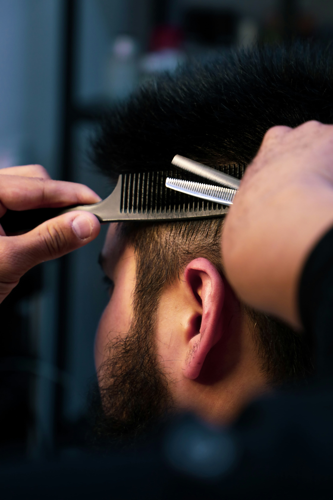

Why Your Haircut Affects Your Moggle Score
Omoggle's AI scans your entire visible face — and the hair framing that face directly influences how the algorithm reads your proportions, face shape, and feature prominence. The right haircut can visually widen or narrow your face, emphasize cheekbones, make your forehead appear more proportional, and expose or conceal jawline structure.
General Principles
Expose the forehead
Hairstyles that pull hair back from the forehead allow the AI to measure your full facial symmetry and proportions without obstruction. Hair falling over the forehead creates measurement noise and can lower your symmetry score. For Omoggle specifically, a clean forehead exposure is consistently associated with higher scores.
Volume on top, tight on sides
The classic high-contrast haircut (fade or undercut on the sides, length on top) creates a visual illusion of a longer, narrower face. This emphasizes jawline definition and cheekbone prominence — both key PSL metrics. It's consistently the highest-scoring hair style across male faces in looksmaxxing communities.
Avoid hair that covers the jaw
Long hair that falls in front of the jaw area obscures one of Omoggle's primary measured metrics. If you have longer hair, pulling it back or behind the ears before a session significantly exposes your jawline for better scoring.
Face Shape Recommendations
Round face: vertical volume
A round face benefits from hairstyles that add vertical height (quiff, pompadour) and minimize width. This creates the illusion of a longer, more oval face shape, which scores higher on overall facial harmony metrics.
Square face: soften the corners
A naturally square face has excellent jawline definition, which scores well on Omoggle. Don't fight it. Keep hair shorter on the sides to emphasize the jaw, and avoid straight-across fringes that make the forehead appear boxy.
Long face: avoid height
Very long faces can score lower on harmony metrics. Medium-length hair with some width reduces the vertical elongation. A fringe can help proportion the forehead.
Grooming Essentials
Clean, freshly washed hair that lies naturally scores better than oily or unkempt hair — the AI picks up on texture and overall presentation. Before any Omoggle session, ensure your hair is clean, styled, and not covering facial landmarks. Combined with the right camera setup, this alone can raise your score noticeably.
Test how your current hair is affecting your score — use our free AI Face Analyzer and try different photos with your hair pulled back versus your normal style.